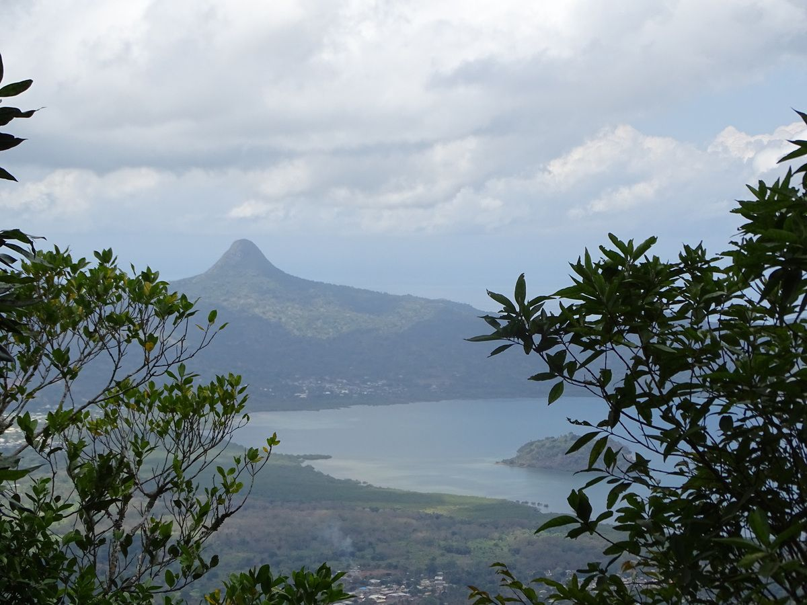
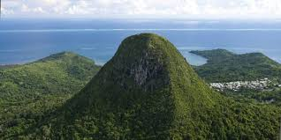

Make this Notebook Trusted to load map: File -> Trust Notebook
Introduction
Mayotte, située dans l’océan Indien entre Madagascar et le Mozambique, est une collectivité unique au sein de la République française, revêtant le statut de département et région d’outre-mer depuis 2011.
Mayottte l’île au parfun
L’histoire de Mayotte est marquée par une mosaïque de cultures, de traditions et d’influences diverses, des premiers habitants bantous aux influences arabes, portugaises et françaises. La position stratégique de Mayotte dans le canal du Mozambique en fait un point de rencontre de différentes civilisations, enrichissant son patrimoine culturel et historique.
En dépit de ses nombreux atouts naturels, Mayotte fait face à des défis socio-économiques significatifs. Ce rapport vise à fournir une vue d’ensemble exhaustive de l’île, en explorant ses caractéristiques géographiques, sa population et sa culture, son économie, son environnement et sa biodiversité, ainsi que ses structures sociales et politiques. Il s’agit de comprendre les dynamiques qui façonnent Mayotte aujourd’hui et les perspectives d’avenir pour cette île pleine de promesses et de contrastes.
La carte de Mayotte et ses départements
Mayotte est un département français d’outre-mer depuis 2011, ce qui signifie qu’elle fait partie intégrante de la République française. Elle est également l’une des rares régions ultramarines de l’Union européenne.
L’île est d’origine volcanique et possède un relief montagneux, notamment avec le mont Benara qui culmine à environ 660 mètres d’altitude. Les lagons entourant l’île sont réputés pour leur biodiversité marine exceptionnelle.
En somme, la localisation de Mayotte dans l’océan Indien lui confère une position unique, et ses caractéristiques géographiques et administratives font d’elle un lieu aux influences diverses, reflétant à la fois son héritage africain, malgache et européen.
1. Géographie et Nature
Superficie : Mayotte s’étend sur environ 374 km², constituant l’une des plus petites collectivités territoriales de France par sa superficie. Cette petite taille géographique contraste avec la richesse de ses paysages et de ses écosystèmes. En raison de sa taille compacte, les déplacements à travers l’île sont relativement rapides, ce qui permet de découvrir une variété de paysages en peu de temps.
Composition : L’île est formée de deux îles principales, Grande-Terre (ou Mahoré) et Petite-Terre (ou Pamanzi), ainsi que de plusieurs îlots environnants. Grande-Terre est la plus grande des deux îles, où se trouvent la majorité des infrastructures et des habitations. Petite-Terre, bien que plus petite, abrite l’aéroport international de Mayotte et plusieurs villages pittoresques. La géographie de l’île est marquée par sa formation volcanique, ce qui lui confère un relief diversifié et accidenté. Les îles environnantes, comme l’îlot Mbouzi et l’îlot Bandrélé, ajoutent à la diversité géographique de Mayotte.
Relief : Le paysage de Mayotte est dominé par des montagnes et des collines, le mont Bénara étant le point culminant à 660 mètres. Cette montagne, située au centre de Grande-Terre, offre des vues panoramiques spectaculaires sur l’ensemble de l’île et le lagon. Les côtes sont bordées par des plages de sable blanc et des mangroves, créant des habitats variés pour la faune et la flore locales. Le relief accidenté et volcanique contribue à la diversité des microclimats et des habitats naturels.
Climat : Le climat tropical de Mayotte est caractérisé par une saison des pluies, de novembre à avril, et une saison sèche, de mai à octobre. Les températures moyennes varient entre 23 et 30 degrés Celsius, créant un environnement favorable à une biodiversité riche et diversifiée. Pendant la saison des pluies, les précipitations abondantes nourrissent les rivières et les forêts tropicales, tandis que la saison sèche est idéale pour les activités en plein air et les explorations marines. Ce climat tropical, combiné à la géographie variée de l’île, soutient une multitude d’écosystèmes, allant des forêts denses aux récifs coralliens colorés.
Illustration : Pour mieux visualiser la beauté et la diversité des paysages de Mayotte, voici une photo représentative de l’île.
 
Description des images :
La première photo capture la vue panoramique depuis le mont Bénara, montrant la combinaison spectaculaire de montagnes verdoyantes, de plages de sable blanc et du lagon turquoise qui entoure l’île. La diversité des paysages de Mayotte est un témoignage de sa richesse naturelle et de son attrait pour les visiteurs et les habitants.
La deuxième photo présente le mont Choungui, un autre sommet emblématique de Mayotte. Ce pic volcanique, visible de loin, offre des sentiers de randonnée qui permettent d’explorer les flancs escarpés et de profiter de vues imprenables sur les environs.
2. Population et Culture
Population : Avec environ 300 000 habitants, Mayotte est une île à forte densité de population et en croissance rapide. La population est majoritairement jeune, avec une proportion élevée de moins de 20 ans.
Langues : Le français est la langue officielle utilisée dans l’administration et l’éducation. Cependant, le shimaoré, une langue bantoue, et le kibushi, un dialecte malgache, sont largement parlés dans la vie quotidienne, reflétant la diversité culturelle de l’île.
Religion : La majorité des Mahorais pratiquent l’islam. Cette religion joue un rôle central dans la vie quotidienne et les traditions de l’île, influençant les fêtes, les cérémonies et les coutumes locales.
3. Économie
Secteurs principaux : - Agriculture : La production de vanille, d’ylang-ylang et de canne à sucre est au cœur de l’économie agricole de Mayotte. Ces produits sont également exportés et constituent une source importante de revenus. - Pêche : La pêche est une activité économique vitale pour de nombreux habitants de l’île, fournissant à la fois des moyens de subsistance et des ressources alimentaires. - Transferts publics : Les transferts financiers en provenance de la France métropolitaine jouent un rôle crucial dans l’économie de Mayotte, soutenant les infrastructures et les services publics.
Défis économiques : - Le taux de chômage est élevé, particulièrement parmi les jeunes. - L’économie informelle est prédominante, avec de nombreux habitants dépendant de petites activités non réglementées pour leur subsistance. - Les infrastructures, telles que les routes, les écoles et les hôpitaux, nécessitent des investissements significatifs pour répondre aux besoins croissants de la population.
4. Environnement et Biodiversité
Lagon et récif corallien : Mayotte est entourée par l’un des plus grands lagons fermés au monde, abritant une biodiversité marine exceptionnelle. Les récifs coralliens, bien conservés, sont des habitats vitaux pour de nombreuses espèces marines, attirant les plongeurs et les chercheurs du monde entier.
Faune et flore : L’île héberge de nombreuses espèces endémiques, tant animales que végétales. Les forêts de Mayotte, encore largement intactes, abritent des lémuriens, des oiseaux rares et une flore riche. La conservation de ces écosystèmes est essentielle pour maintenir la biodiversité unique de l’île.
5. Société et Politique
Statut politique : Depuis 2011, Mayotte est un département et une région d’outre-mer de la France. Cette intégration a permis un certain nombre de réformes et de développements, mais pose également des défis en termes d’adaptation des structures locales aux standards métropolitains.
Représentation : Mayotte est représentée par deux députés à l’Assemblée nationale française et deux sénateurs. Le Conseil départemental de Mayotte gère les affaires locales, en coopération avec les autorités françaises.
Défis sociaux : - L’immigration clandestine en provenance des Comores voisines pose des défis considérables en termes de gestion des populations et de fourniture de services. - L’accès aux services de santé et à l’éducation est limité, avec des infrastructures souvent insuffisantes pour répondre aux besoins de la population. - Les conditions de vie sont parfois précaires, avec de nombreux habitants vivant dans des situations de pauvreté.
Conclusion
Mayotte est une île de contrastes, où la richesse culturelle et naturelle coexiste avec des défis socio-économiques importants. En tant que département français d’outre-mer, elle bénéficie du soutien de la France métropolitaine, mais doit également naviguer des complexités liées à son histoire, sa géographie et sa démographie unique.
L’avenir de Mayotte repose sur sa capacité à équilibrer le développement économique avec la préservation de son environnement exceptionnel. Le potentiel touristique, lié à ses plages, son lagon et ses récifs coralliens, représente une opportunité majeure pour l’île. Par ailleurs, l’amélioration des infrastructures et des services publics est essentielle pour répondre aux besoins croissants de la population et réduire les inégalités.
En conclusion, Mayotte, avec sa diversité culturelle, sa richesse environnementale et son statut politique unique, offre un exemple fascinant des défis et des opportunités des régions d’outre-mer. La voie vers un avenir prospère et durable nécessitera une approche équilibrée, intégrant développement économique, justice sociale et conservation environnementale.